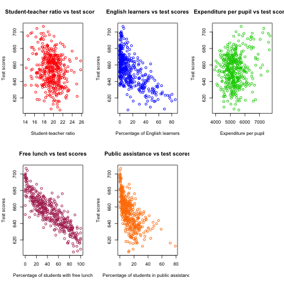

The Application of California School
1 Introduction
This tutorial is to show how to estimate a multiple regression model and perform linear hypothesis testing. The application is about the test scores of the California school districts. We will use R to replicate the multiple regression with this data set in Chapter 6, and the hypothesis tests in Chapter 7, StockWatson2011.
Before running all R codes, we may first load all the packages.
library(AER) library(foreign) library(stargazer)
2 Reading the data and basic summary statistics
Let's first read the data into R and show some basic statistics.
Read the STATA file
Since the data is stored as an STATA file with the extension
".dta", we read the data using read.dta() in the library of
foreign.
setwd("/Users/ztian/OneDrive/teaching/workshop/intro_org_RR/example") classdata <- read.dta("./data/caschool.dta")
Summary
Upon reading the data, we often use summary() to see some basic
statistics. Here we are not going to show summary statistics of all
variables in the data set for the purpose of saving space, but only to
select several variables of interest in Chapters 6 and 7, including
test scores, testscr, student-teacher ratio, str, percentage of
English learners, el_pct, expenditure per pupil, expn_stu, and
percentage of students qualifying for free lunch, mean_pct.
summary(classdata[c("testscr", "str", "el_pct", "expn_stu", "meal_pct")])
| testscr | str | el_pct | expn_stu | meal_pct |
|---|---|---|---|---|
| Min. :605.5 | Min. :14.00 | Min. : 0.000 | Min. :3926 | Min. : 0.00 |
| 1st Qu.:640.0 | 1st Qu.:18.58 | 1st Qu.: 1.941 | 1st Qu.:4906 | 1st Qu.: 23.28 |
| Median :654.5 | Median :19.72 | Median : 8.778 | Median :5215 | Median : 41.75 |
| Mean :654.2 | Mean :19.64 | Mean :15.768 | Mean :5312 | Mean : 44.71 |
| 3rd Qu.:666.7 | 3rd Qu.:20.87 | 3rd Qu.:22.970 | 3rd Qu.:5601 | 3rd Qu.: 66.86 |
| Max. :706.8 | Max. :25.80 | Max. :85.540 | Max. :7712 | Max. :100.00 |
3 Plots
Create a matrix of scatterplots using plot
We can create several scatterplots displayed in one graph with a matrix form.
oldpar <- par(mfrow = c(2, 3)) plot(classdata$str, classdata$testscr, col = "red", main = "Student-teacher ratio vs test scores", xlab = "Student-teacher ratio", ylab = "Test scores") plot(classdata$el_pct, classdata$testscr, col = "blue", main = "English learners vs test scores", xlab = "Percentage of English learners", ylab = "Test scores") plot(classdata$expn_stu, classdata$testscr, col = "green3", main = "Expenditure per pupil vs test scores", xlab = "Expenditure per pupil", ylab = "Test scores") plot(classdata$meal_pct, classdata$testscr, col = "maroon", main = "Free lunch vs test scores", xlab = "Percentage of students with free lunch", ylab = "Test scores") plot(classdata$calw_pct, classdata$testscr, col = "darkorange1", main = "Public assistance vs test scores", xlab = "Percentage of students in public assistance", ylab = "Test scores") par(oldpar)

Figure 1: The scatterplots between several variables and test scores
We can see that the codes above have some parts that are repeated in
each plotting command. So these repetitive work can be concisely
written in for a loop. The basic syntax of a for loop is
for (var in seq) expr.
xvars <- c("str", "el_pct", "expn_stu", "meal_pct", "calw_pct")
yvars <- c("testscr")
xlabels <- c("Student-teacher ratio", "Percentage of English learners",
"Expenditure per pupil", "Percentage of students with free lunch",
"Percentage of students in the public assistant program")
ylabels <- "Test scores"
titles <- c("student-teacher ratio vs test scores",
"English learners vs test scores",
"Expenditure per pupil vs test scores",
"Free lunch vs test scores vs test scores",
"public assistance vs test scores")
colors <- c("red", "green3", "blue", "maroon", "darkorange1")
op <- par(mfrow = c(2, 3))
for (i in seq(along=xvars)) {
fm <- formula(paste(yvars, "~", xvars[i]))
plot(fm, data = classdata, col = colors[i], main = titles[i],
xlab = xlabels[i], ylab = ylabels)
}
par(op)
4 Estimation
Let us first replicate the regression results in Equation (7.19). The
unit of the expenditure per pupil is dollars in the data set but it is
in thousand dollars in regression. So we need to convert the unit in
the data set by dividing expn_stu by 1000, which is done directly in
the formula.
The OLS estimation
model.76 <- testscr ~ str + I(expn_stu / 1000) + el_pct
Notice the function I() in the formula. The arithmetic operations,
+, *, :, /, and ^, have special meanings in R's formula. Using the
function I() protects the original arithmetic meanings of these
operations from being interpreted in terms of a formula.
The regression estimation can be done with lm() and use summary()
afterwards.
res.model.76 <- lm(model.76, data = classdata)
summary(res.model.76)
Call:
lm(formula = model.76, data = classdata)
Residuals:
Min 1Q Median 3Q Max
-51.340 -10.111 0.293 10.318 43.181
Coefficients:
Estimate Std. Error t value Pr(>|t|)
(Intercept) 649.57795 15.20572 42.719 < 2e-16 ***
str -0.28640 0.48052 -0.596 0.55149
I(expn_stu/1000) 3.86790 1.41212 2.739 0.00643 **
el_pct -0.65602 0.03911 -16.776 < 2e-16 ***
---
Signif. codes: 0 ‘***’ 0.001 ‘**’ 0.01 ‘*’ 0.05 ‘.’ 0.1 ‘ ’ 1
Residual standard error: 14.35 on 416 degrees of freedom
Multiple R-squared: 0.4366, Adjusted R-squared: 0.4325
F-statistic: 107.5 on 3 and 416 DF, p-value: < 2.2e-16
We can extract some components in the reported results. Use coef() to
get the coefficient estimates, resid() to get the residuals, and fitted()
or predict() to get the fitted values. Alternatively, we can think the
lm and summary.lm objects returned by lm() and summary() are the
list object so that we can use the "$" operator to get each component of
the lists. Below are some examples of extracting regression results.
# get some components of the results bhat <- coef(res.model.76) rsq <- summary(res.model.76)$r.squared adj.rsq <- summary(res.model.76)$adj.r.squared
- Interpretation of the results
As for the coefficients
- The intercept is
649.5779, which is significant at 1% significance level. It does not have real meaning in this application, just determining the position of the sample regression line crossing the vertical axis. - The coefficient on
stris-0.2864, implying that increasing one more student per teacher would decrease test scores by0.2864unit. However, this estimated coefficient is not significant at the 10% level. - The coefficient on expenditure per pupil is
3.8679, significantly positive at the 5% level, implying that an increase in expenditure per pupil by one thousand dollars lead to an increase in test scores by3.8679unit. - The coefficient on the percentage of English learners is
-0.656, significantly negative at the 1% level, implying that an increase in the percentage of English learners by one percent results in a decrease of test scores by0.656.
Besides, the \(R^2\) and \(\bar{R}^2\) are
0.4366and0.4325, respectively. Overall, the model explains about 43% variation of test scores with the included explanatory variables, which is modest in the sense that a little more than half of the variation of test scores is not accounted for in the model. - The intercept is
The heteroskedasticity-consistent covariance matrix
Note that standard errors and t statisitcs reported by summary() are
the homoskedasticity-only s.e. and t's. The heteroskedasticity-robust
covariance matrix can be obtained by vcovHC() in the package of
sandwich.
htvarm <- vcovHC(res.model.76, type = "HC1")
| 238.960380157595 | -6.66491920338914 | -20.7034584893236 | 0.0818068203778049 |
| -6.66491920338933 | 0.232394197515306 | 0.40034628247013 | -0.00244872476838095 |
| -20.7034584893232 | 0.400346282470112 | 2.49868335516912 | -0.0102366018665727 |
| 0.0818068203778026 | -0.00244872476838084 | -0.0102366018665727 | 0.00101024993508859 |
5 Hypothesis tests
Testing a single coefficient
Running summary(res.model.76) can give you t-statistics for all
coefficients. However, as noted above, these t-statistics are the
homoskedasticity-only t-statistics. We should use the
heteroskedasticity-robust ones.
# homoskedasticity-only coeftest(res.model.76) # heteroskedasticity-robust, t distribution cftest.t <- coeftest(res.model.76, vcov = htvarm) cftest.t # heteroskedasticity-robust, normal distribution cftest.n <- coeftest(res.model.76, vcov = htvarm, df = Inf) cftest.n
t test of coefficients:
Estimate Std. Error t value Pr(>|t|)
(Intercept) 649.577947 15.205719 42.7193 < 2.2e-16 ***
str -0.286399 0.480523 -0.5960 0.551489
I(expn_stu/1000) 3.867902 1.412122 2.7391 0.006426 **
el_pct -0.656023 0.039106 -16.7755 < 2.2e-16 ***
---
Signif. codes: 0 ‘***’ 0.001 ‘**’ 0.01 ‘*’ 0.05 ‘.’ 0.1 ‘ ’ 1
t test of coefficients:
Estimate Std. Error t value Pr(>|t|)
(Intercept) 649.577947 15.458343 42.0212 < 2e-16 ***
str -0.286399 0.482073 -0.5941 0.55277
I(expn_stu/1000) 3.867902 1.580722 2.4469 0.01482 *
el_pct -0.656023 0.031784 -20.6397 < 2e-16 ***
---
Signif. codes: 0 ‘***’ 0.001 ‘**’ 0.01 ‘*’ 0.05 ‘.’ 0.1 ‘ ’ 1
z test of coefficients:
Estimate Std. Error z value Pr(>|z|)
(Intercept) 649.577947 15.458343 42.0212 < 2e-16 ***
str -0.286399 0.482073 -0.5941 0.55245
I(expn_stu/1000) 3.867902 1.580722 2.4469 0.01441 *
el_pct -0.656023 0.031784 -20.6397 < 2e-16 ***
---
Signif. codes: 0 ‘***’ 0.001 ‘**’ 0.01 ‘*’ 0.05 ‘.’ 0.1 ‘ ’ 1
We can see from the results above that
- whether we use the homoskedasticity-only or heteroskedasticity-robust variance matrices does not affect the coefficient estimates because the calculation of these estimates does not involve the variance matrices.
- Using the homoskedasticity-only or heteroskedasticity-robust variance matrices yields different standard errors and t-statistics. Even though the homoskedasticity-only standard errors of student-teacher ratios seems smaller than the heteroskedasticity-robust ones, we cannot say that the estimates with the homoskedasticity-only standard errors are more efficient or precise because we are using a wrong variance matrix in this case.
- The p-values from t distribution and standard normal distribution are slightly different, given the corresponding t-statistics are identical in the two cases.
Testing joint hypotheses
- Zero restrictions
Let's first test the joint zero restrictions. \[ H_0:\, \beta_1 = 0, \beta_2 = 0 \text{ vs. } H_1: \beta_1 \neq 0 \text{ or } \beta_2 \neq 0 \]
We can use the function
linearHypothesis()to test this and any linear hypotheses.test1 <- linearHypothesis(res.model.76, c("str = 0", "I(expn_stu/1000) = 0"), vcov = htvarm, test = "F") test1 test1.F <- test1$F[2] test1.p <- test1$"Pr(>F)"[2]
Linear hypothesis test Hypothesis: str = 0 I(expn_stu/1000) = 0 Model 1: restricted model Model 2: testscr ~ str + I(expn_stu/1000) + el_pct Note: Coefficient covariance matrix supplied. Res.Df Df F Pr(>F) 1 418 2 416 2 5.4337 0.004682 ** --- Signif. codes: 0 ‘***’ 0.001 ‘**’ 0.01 ‘*’ 0.05 ‘.’ 0.1 ‘ ’ 1
The F-statistic is
5.4337with the p-value as0.0047, which is less than 1%. Therefore, we can reject the null hypothesis at the 1% level.Note that the F-statistic is computed with the heteroskedasticity-robust variance matrix and tested against a F distribution of (2, 416) degree of freedom.
- linear restrictions
Let's test the following restriction, \[ H_0:\, \beta_1 + \beta_2 = 0, H_1: \beta_1 + \beta_2 \neq 0 \]
We still use
linearHypothesis(). But this time we use the argumentwhite.adjustfor which we specify "hc1" and test against a Chi-squared distribution with one degree of freedom. Therefore, what we get is a Wald statistic.# b1 + b2 = 0 test2 <- linearHypothesis(res.model.76, c("str + I(expn_stu/1000) = 0"), white.adjust = "hc1", test = "Chisq") test2 test2.x <- test2$Chisq[2] test2.p <- test2$"Pr(>Chisq)"[2]
Linear hypothesis test Hypothesis: str + I(expn_stu/1000) = 0 Model 1: restricted model Model 2: testscr ~ str + I(expn_stu/1000) + el_pct Note: Coefficient covariance matrix supplied. Res.Df Df Chisq Pr(>Chisq) 1 417 2 416 1 3.6319 0.05668 . --- Signif. codes: 0 ‘***’ 0.001 ‘**’ 0.01 ‘*’ 0.05 ‘.’ 0.1 ‘ ’ 1
The Wald statistic is
3.6319and the p-value is0.0567, which is less than 10% and greater than 5%. That means that the null hypothesis can be rejected at the 10% level but not at the 5% level. This result implies that the effects of hiring more teachers on test scores could be to some extent similar to increasing more expenditure per pupil.The homoskedasticity-only F statistic can be computed without specifying
vcovorwhite.adjust.# homoskedasticity-only F test2.hm <- linearHypothesis(res.model.76, c("str + I(expn_stu/1000) = 0"), test = "F") test2.hm
Linear hypothesis test Hypothesis: str + I(expn_stu/1000) = 0 Model 1: restricted model Model 2: testscr ~ str + I(expn_stu/1000) + el_pct Res.Df RSS Df Sum of Sq F Pr(>F) 1 417 86562 2 416 85700 1 862.09 4.1847 0.04142 * --- Signif. codes: 0 ‘***’ 0.001 ‘**’ 0.01 ‘*’ 0.05 ‘.’ 0.1 ‘ ’ 1
The homoskedasticity-only F test points to rejecting the null hypothesis at both 5% and 10% levels.
6 Control variables and model specifications
In this section we estimate different models for the application of test scores. The variable of interest is student-teacher ratios, \(STR\). In the base specification, we include the percentage of students who are English learners, \(PctEL\), and the percentage of students who are eligible for free or subsidized lunch, \(LchPct\), as control variables. An alternative control variable is the percentage of students who receive public assistance.
model1 <- lm(testscr ~ str, data = classdata) model2 <- lm(testscr ~ str + el_pct, data = classdata) model3 <- lm(testscr ~ str + el_pct + meal_pct, data = classdata) model4 <- lm(testscr ~ str + el_pct + calw_pct, data = classdata) model5 <- lm(testscr ~ str + el_pct + meal_pct + calw_pct, data = classdata)
We compute the heteroskedasticity-robust standard errors for the
coefficients in all model specifications. The function vcovHC is
used to get the heteroskedasticity-consistent covariance matrix (HCCM), in
which we set the argument type to be HC1. The
heteroskedasticity-robust standard errors of coefficients are the
square roots of the diagonal elements of these HCCMs.
hccm1 <- vcovHC(model1, type = "HC1") se1 <- sqrt(diag(hccm1)) hccm2 <- vcovHC(model2, type = "HC1") se2 <- sqrt(diag(hccm2)) hccm3 <- vcovHC(model3, type = "HC1") se3 <- sqrt(diag(hccm3)) hccm4 <- vcovHC(model4, type = "HC1") se4 <- sqrt(diag(hccm4)) hccm5 <- vcovHC(model5, type = "HC1") se5 <- sqrt(diag(hccm5))
Finally, the results for all models are displayed in Table
(\ref{table:tbl71}) that replicates Table 7.1 in Chapter 7. To create
a LaTeX table, we use the function stargazer.
stargazer(model1, model2, model3, model4, model5,
title = "Results of regressions of test scores and class size",
covariate.labels = c("student-teacher ratio",
"percent English learners",
"percent eligible for subsidized lunch",
"percent on public assistance"),
dep.var.caption = "average test scores in the district",
se = list(se1, se2, se3, se4, se5), df = FALSE,
font.size = "small",
header = FALSE,
label = "table:tbl71")
7 Appendix: R codes
library(AER)
# read the data files into R
# read the dta file
library(foreign)
classdata <- read.dta("caschool.dta")
head(classdata)
str(classdata)
summary(classdata[, c("testscr", "str", "el_pct", "expn_stu", "meal_pct")])
model.76 <- testscr ~ str + I(expn_stu / 1000) + el_pct
res.model.76 <- lm(model.76, data = classdata)
summary(res.model.76)
# scatterplot
oldpar <- par(mfrow = c(2, 2))
plot(classdata$str, classdata$testscr, col = "red",
main = "student-teacher ratio vs test scores",
xlab = "Student-teacher ratio", ylab = "Test scores")
plot(classdata$el_pct, classdata$testscr, col = "blue",
main = "English learners vs test scores",
xlab = "Percentage of English learners",
ylab = "Test scores")
plot(classdata$expn_stu, classdata$testscr, col = "green",
main = "Expenditure per pupil vs test scores",
xlab = "Expenditure per pupil",
ylab = "Test scores")
plot(classdata$meal_pct, classdata$testscr, col = "black",
main = "Free lunch vs test scores",
xlab = "Percentage of students with free lunch",
ylab = "Test scores")
par(oldpar)
# do this in a loop
xvars <- c("str", "el_pct", "expn_stu", "meal_pct")
yvars <- c("testscr")
xlabels <- c("Student-teacher ratio", "Percentage of English learners",
"Expenditure per pupil", "Percentage of students with free lunch")
ylabels <- "Test scores"
titles <- c("student-teacher ratio vs test scores",
"English learners vs test scores",
"Expenditure per pupil vs test scores",
"Free lunch vs test scores")
colors <- c("red", "green3", "blue", "black")
op <- par(mfrow = c(2, 2))
for (i in seq(along=xvars)) {
fm <- formula(paste(yvars, "~", xvars[i]))
plot(fm, data = classdata, col = colors[i], main = titles[i],
xlab = xlabels[i], ylab = ylabels)
}
par(op)
## # use pairs() or scatterplot.matrix() in car
## pairs(~ testscr +str + el_pct + expn_stu + meal_pct,
## data = classdata)
## scatterplot.matrix(~ testscr +str + el_pct + expn_stu + meal_pct,
## data = classdata)
###############################################
### estimation ###
###############################################
model.76 <- testscr ~ str + I(expn_stu / 1000) + el_pct
res.model.76 <- lm(model.76, data = classdata)
summary(res.model.76)
# get some components of the results
bhat <- coef(res.model.76)
rsq <- summary(res.model.76)$r.squared
adj.rsq <- summary(res.model.76)$adj.r.squared
htvarm <- vcovHC(res.model.76, type = "HC1")
# application of the FWL theorem
# purge the effect of English learners and expenditure per pupil
mod.fwl1 <- lm(testscr ~ el_pct + I(expn_stu/1000), data = classdata)
mod.fwl2 <- lm(str ~ el_pct + I(expn_stu/1000), data = classdata)
mod.fwl3 <- lm(resid(mod.fwl1) ~ resid(mod.fwl2))
# test whether the FWL theorm works
# first check for the equality of the coefficient on str
if (abs(coef(res.model.76)[2] - coef(mod.fwl3)[2]) < 1.0e-10) {
cat("The coefficient on str is the same.\n")
} else {
cat("The FWL theorem fails? Check your step!\n")
}
# second check for the equality of residuals
if (all(abs(resid(mod.fwl3) - resid(res.model.76)) < 1.0e-10)) {
cat("The residuals are all the same.\n")
} else {
cat("The FWL theorem fails? Check your step!\n")
}
###############################################
### hypothesis testing ###
###############################################
# single coefficient test
# homoskedasticity-only
coeftest(res.model.76)
# heteroskedasticity-robust, t distribution
cftest.t <- coeftest(res.model.76, vcov = htvarm)
# heteroskedasticity-robust, normal distribution
cftest.n <- coeftest(res.model.76, vcov = htvarm, df = Inf)
# joint hypothesis
# b1 = 0, b2 = 0
test1 <- linearHypothesis(res.model.76,
c("str = 0", "I(expn_stu/1000) = 0"),
vcov = htvarm, test = "F")
test1
test1.F <- test1$F[2]
test1.p <- test1$"Pr(>F)"[2]
# b1 + b2 = 0
test2 <- linearHypothesis(res.model.76,
c("str + I(expn_stu/1000) = 0"),
white.adjust = "hc1", test = "Chisq")
test2
test2.x <- test2$Chisq[2]
test2.p <- test2$"Pr(>Chisq)"[2]
# homoskedasticity-only F
test2.hm <- linearHypothesis(res.model.76,
c("str + I(expn_stu/1000) = 0"),
test = "Chisq")
test2.hm
#######################################################
## Control variables and model specifications ##
#######################################################
# replicate Table 7.1
model1 <- lm(testscr ~ str, data = classdata)
model2 <- lm(testscr ~ str + el_pct, data = classdata)
model3 <- lm(testscr ~ str + el_pct + meal_pct, data = classdata)
model4 <- lm(testscr ~ str + el_pct + calw_pct, data = classdata)
model5 <- lm(testscr ~ str + el_pct + meal_pct + calw_pct, data = classdata)
hccm1 <- vcovHC(model1, type = "HC1")
se1 <- sqrt(diag(hccm1))
hccm2 <- vcovHC(model2, type = "HC1")
se2 <- sqrt(diag(hccm2))
hccm3 <- vcovHC(model3, type = "HC1")
se3 <- sqrt(diag(hccm3))
hccm4 <- vcovHC(model4, type = "HC1")
se4 <- sqrt(diag(hccm4))
hccm5 <- vcovHC(model5, type = "HC1")
se5 <- sqrt(diag(hccm5))
library(stargazer)
stargazer(model1, model2, model3, model4, model5,
title = "Results of regressions of test scores and class size",
covariate.labels = c("student-teacher ratio",
"percent English learners",
"percent eligible for subsidized lunch",
"percent on public assistance"),
dep.var.caption = "average test scores in the district",
se = list(se1, se2, se3, se4, se5), df = FALSE,
font.size = "small",
label = "table:tbl71")